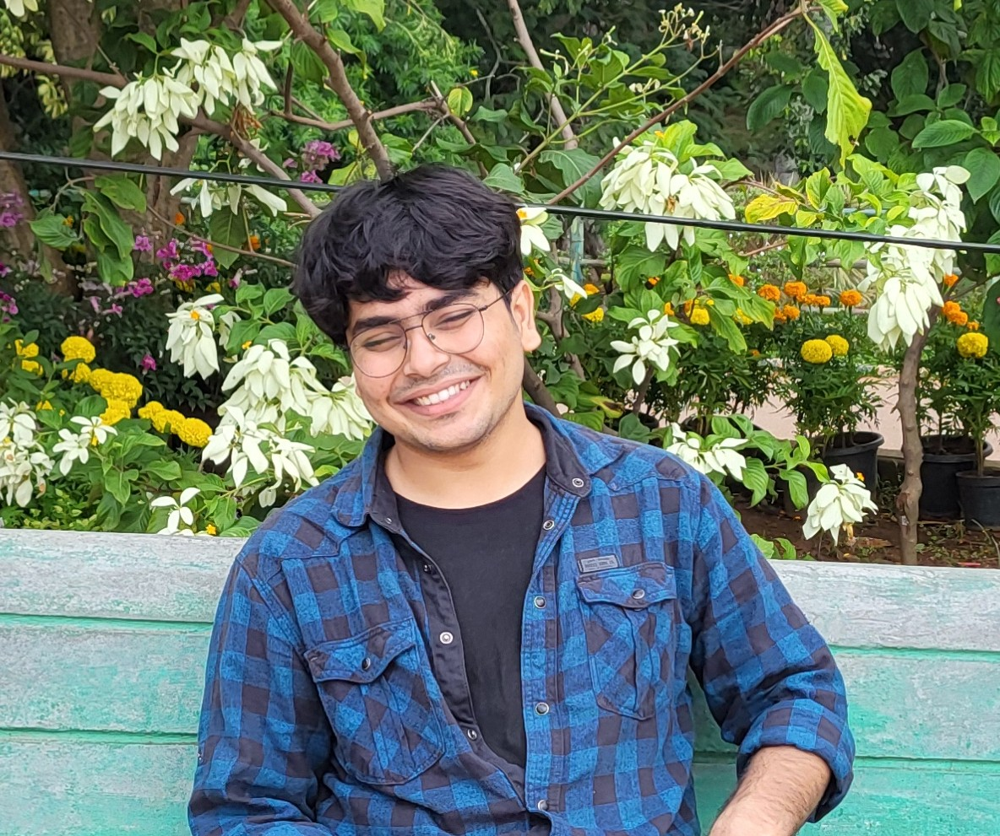

Masters Student, IISc Bengaluru
I pursued my undergraduate in Mathematics and Computing at the Indian Institute of Science (IISc), Bengaluru. I was fortunate to have been advised by Prof. Chiranjib Bhattacharyya during my B.Tech Project, and I am currently working under Prof. Chiranjib Bhattacharyya and Prof. Anant Raj on various topics. In particular, I am exploring performative prediction and the relationship between optimization algorithms & dynamical systems.
My research interests lie in Machine Learning, optimization, statistics, and control theory. While my interests and work is primarily theoretical, I actively engage with ML applications through internships and collaborations.
